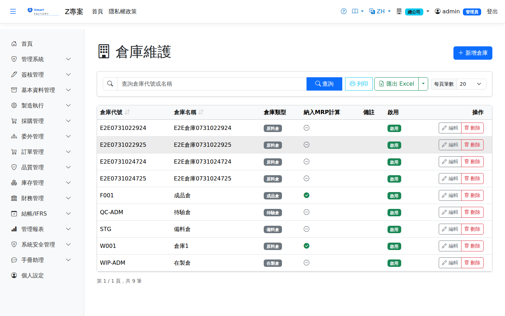

倉庫Warehouse
路由：/BAS/Warehouse | 廠別倉庫與儲位管理Route: /BAS/Warehouse | Plant warehouses and storage locations
倉庫主檔定義本廠所有倉庫，並可在倉庫下設立多個儲位（Storage Location）。庫存管理的入出庫、調撥等操作都需指定倉庫與儲位。The warehouse master defines every warehouse in the plant, and each warehouse can hold several storage locations. Inventory receipts, issues and transfers all require a warehouse and a location.

倉庫畫面截圖（示意，實際欄位/資料依權限與查詢條件而異）Warehouse screenshot (illustrative; actual fields and data vary by permission and query criteria)
倉庫欄位說明Warehouse fields
| 欄位名稱Field | 必填Required | 說明Guide |
|---|---|---|
| 倉庫代碼Warehouse Code | 必填Required | 唯一識別碼，建立後不可修改（例：WH01）Unique code; cannot be changed once created (e.g. WH01) |
| 倉庫名稱WH Name | 必填Required | 倉庫完整名稱（例：原料倉、成品倉）Full warehouse name (e.g. Raw Material, Finished Goods) |
| 倉庫類型Warehouse Type | 必填Required | 原料（Raw）/ 在製品（WIP）/ 成品（Finished）/ 待驗（Quarantine）/ 委外（Outsource）/ 報廢（Scrap）/ 備料（Staging）/ 客供（Customer Supplied），各類型的可用量與計價處理方式詳見下表Raw / WIP / Finished / Quarantine / Outsource / Scrap / Staging / Customer Supplied; the table below shows how each type is treated in available quantity and in costing |
| 是否 MRP 倉MRP Warehouse | 勾選後，MRP 計算時會納入此倉庫的庫存餘量Once checked, MRP includes the stock held in this warehouse | |
| 是否啟用Active | 停用後不影響歷史資料，但不可選為新異動目標倉History is unaffected, but it cannot be chosen as the target warehouse of new transactions | |
| 備註Notes | 倉庫補充說明Warehouse notes |
倉庫類型與可用量Warehouse type and available quantity
倉庫類型除了分類用途外，也決定該倉庫存是否計入「廠級可用量」（MRP 與料況判定的依據）：Besides classification, the warehouse type also decides whether its stock counts toward plant-level available quantity (the basis for MRP and material readiness):
| 類型Type | 計入可用量Counts toward available quantity | 用途說明Purpose |
|---|---|---|
| 原料（Raw）Raw | 是Yes | 採購進貨、發料來源Source for goods receipt and material issue |
| 在製品（WIP）WIP | 是Yes | 製程中半成品Semi-finished goods in process |
| 成品（Finished）Finished | 是Yes | 完工入庫、出貨來源Source for production put-away and shipping |
| 待驗（Quarantine）Quarantine | 否No | IQC 檢驗放行前的暫置區，未放行不得動用Holding area before IQC release; stock cannot be used until it is released |
| 委外（Outsource）Outsource | 是Yes | 委外出料的目的地倉Destination warehouse for material sent to outsourcing |
| 報廢（Scrap）Scrap | 是Yes | 報廢單／製程損耗的歸集倉。系統不會自動把此倉排除在可用量之外，建議不勾選「是否 MRP 倉」以免報廢品被 MRP 當成可用庫存Collection warehouse for scrap documents and process losses. The system does not exclude it from available quantity automatically, so leave "MRP Warehouse" unchecked to stop MRP treating scrap as usable stock |
| 備料（Staging）Staging | 是Yes | 備料單移入的待領用區，等候生產領料Holding area filled by staging orders, waiting to be issued to production |
| 客供（Customer Supplied）Customer Supplied | 是Yes | 客戶提供之料件的唯一合法去處（客供進貨 CI／客供退回 CR）。料可以正常領用去做該客戶的訂單，所以計入可用量；但The only valid destination for material supplied by a customer (customer-supplied receipt CI and return CR). The material can be issued normally for that customer's orders, so it counts toward availability, but 單位成本恆為 0、不進移動平均its unit cost is always 0 and it never enters the moving average——所有權屬客戶，不是我們的資產 — it belongs to the customer and is not our asset |
備料倉為何仍計入可用量：Why staging warehouses still count toward available quantity:備料倉的料在備料單「確認」時就已被預留鎖住，
可用量早已扣過一次；若比照待驗倉再排除一次，等於同一批料扣兩次，全廠可用量會憑空短少、
MRP 產生不該有的請購。待驗倉沒有預留機制，所以必須靠倉庫類型排除。 Material in a staging warehouse is already reserved and locked when the staging order is confirmed, so available quantity has been deducted once. Excluding it again the way quarantine stock is excluded would deduct the same material twice, understating plant-wide availability and making MRP raise purchase requests that are not needed. Quarantine warehouses have no reservation mechanism, so they must be excluded by warehouse type.
客供料為何一定要收在客供倉：Why customer-supplied material must go to a customer-supplied warehouse:移動平均的成本池是「廠別 × 品號」，
分母取該品號在該廠的全部在手量。客供料若收進一般倉，它的數量就會進到均價分母、把自有料的單價壓低，
而且會擴散到之後每一張出貨的銷貨成本——帳面依然平衡，沒有任何錯誤訊息。分品號或分批號都擋不住，
因為分母本來就是全廠同品號加總，只有倉庫類型分得開。系統在過帳時會擋下收往非客供倉的客供異動，
而「資料稽核診斷」另有一項專門找出既有落在錯誤倉別的客供庫存，處置方式是把該批調撥到客供倉。 The moving-average cost pool is keyed by plant and item, and the denominator is every on-hand unit of that item in the plant. Customer-supplied material received into an ordinary warehouse therefore enters that denominator, depressing the unit cost of your own stock and spreading into the cost of goods sold of every later shipment — the books still balance and nothing reports an error. Separating by item or by lot does not help, because the denominator sums the whole plant anyway; only the warehouse type separates them. Posting blocks customer-supplied movements aimed at any other warehouse type, and the Data Audit report has a dedicated check that finds customer-supplied stock already sitting in the wrong warehouse; the fix is to transfer that stock into a customer-supplied warehouse.
儲位管理Location management
編輯倉庫後，切換至「儲位」分頁可新增、修改、停用儲位。建議每個倉庫至少設定一個預設儲位（例：A-01）。After opening a warehouse, switch to the "Location" tab to add, edit or deactivate locations. Give every warehouse at least one default location (e.g. A-01).
| 欄位名稱Field | 必填Required | 說明Guide |
|---|---|---|
| 儲位代碼Location Code | 必填Required | 倉庫內唯一，建議依排架號命名（例：A-01-01）Unique within the warehouse; naming by rack and level is recommended (e.g. A-01-01) |
| 儲位名稱Location Name | 必填Required | 儲位說明（例：A 排 01 層）Location description (e.g. row A, level 01) |
| 是否啟用Active | 停用後不可作為新異動的目標儲位Once inactive, cannot be used as the target location of new transactions |
新增儲位步驟Adding a location
1
在倉庫列表點擊要管理的倉庫，開啟編輯側欄。Click the warehouse you want to manage in the list to open the edit panel.
2
切換至「儲位」分頁，點「新增儲位」。Switch to the "Location" tab and click "Add Location".
3
填入儲位代碼、儲位名稱後點「確定」。Enter the location code and name, then click "Confirm".
4
新增完成後點「儲存」確認所有變更。Click "Save" to confirm all changes when you are done.
操作步驟Steps
新增倉庫Add Warehouse
1
進入「基本資料 > 倉庫」，點「新增」。Go to "Basic Data > Warehouse" and click "Add".
2
填入代碼、名稱、選擇倉庫類型，視需要勾選「是否 MRP 倉」。Enter the code and name, pick a warehouse type, and check "MRP Warehouse" if needed.
3
點「儲存」後，切換至「儲位」分頁新增儲位。Click "Save", then switch to the "Location" tab to add locations.
MRP 執行時只會計算「是否 MRP 倉」已勾選的倉庫庫存，維修倉、退貨倉通常不需勾選。MRP only counts stock in warehouses with "MRP Warehouse" checked. Repair and return warehouses normally should not be checked.
注意：Note:倉庫代碼不可修改。若需停用倉庫，請確認倉庫內無在手庫存，否則庫存異動將受影響。 The warehouse code cannot be changed. Before deactivating a warehouse, make sure it holds no on-hand stock, otherwise inventory transactions will be affected.